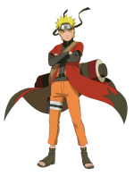

Hello World!
Abaixo irei criar uma lista com os consoles e jogos favoritos de cada um deles
- PlayStation
- God of war
- Resident Evil 4
- Silent Hill 2
- Nintendo
- Super Mario World
- Zelda Ocarina of the time
- Super Mario 64
- Megadrive
- Sonic 1
- PC
- Life is Strange
- Fortnite
- Dark Souls
Abaixo listarei animes favoritos
- Naruto

- Charlotte

- Mushoku Tensei

Caso queira ir para paginas de noticias ou downloads, clique nos links abaixo: